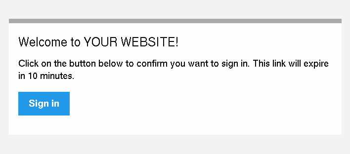

How to use Passwordless Login Link Authentication¶
Login links, also called “magic links”, are a passwordless authentication mechanism. Whenever a user wants to login, a new link is generated and sent to them (e.g. using an email). The link fully authenticates the user in the application when clicking on it.
This authentication method can help you eliminate most of the customer support related to authentication (e.g. I forgot my password, how can I change or reset my password, etc.)
Login links are supported by Symfony when using the experimental authenticator system. You must enable the authenticator system in your configuration to use this feature.
Using the Login Link Authenticator¶
This guide assumes you have setup security and have created a user object in your application. Follow the main security guide if this is not yet the case.
1) Configure the Login Link Authenticator¶
The login link authenticator is configured using the login_link option
under the firewall. You must configure a check_route and
signature_properties when enabling this authenticator:
- YAML
1 2 3 4 5 6 7
# config/packages/security.yaml security: firewalls: main: login_link: check_route: login_check signature_properties: ['id']
- XML
1 2 3 4 5 6 7 8 9 10 11 12 13 14 15 16
<!-- config/packages/security.xml --> <?xml version="1.0" encoding="UTF-8"?> <srv:container xmlns="http://symfony.com/schema/dic/security" xmlns:srv="http://symfony.com/schema/dic/services" xmlns:xsi="http://www.w3.org/2001/XMLSchema-instance" xsi:schemaLocation="http://symfony.com/schema/dic/services https://symfony.com/schema/dic/services/services-1.0.xsd http://symfony.com/schema/dic/security https://symfony.com/schema/dic/security/security-1.0.xsd"> <config> <firewall name="main"> <login-link check-route="login_check"/> </firewall> </config> </srv:container>
- PHP
1 2 3 4 5 6 7 8 9 10
// config/packages/security.php $container->loadFromExtension('security', [ 'firewalls' => [ 'main' => [ 'login_link' => [ 'check_route' => 'login_check', ], ], ], ]);
The signature_properties are used to create a signed URL. This must
contain at least one property of your User object that uniquely
identifies this user (e.g. the user ID). Read more about this setting
further down below.
The check_route must be an existing route and it will be used to
generate the login link that will authenticate the user. You don’t need a
controller (or it can be empty) because the login link authenticator will
intercept requests to this route:
- Annotations
1 2 3 4 5 6 7 8 9 10 11 12 13 14 15 16
// src/Controller/SecurityController.php namespace App\Controller; use Symfony\Bundle\FrameworkBundle\Controller\AbstractController; use Symfony\Component\Routing\Annotation\Route; class SecurityController extends AbstractController { /** * @Route("/login_check", name="login_check") */ public function check() { throw new \LogicException('This code should never be reached'); } }
- YAML
1 2 3 4 5
# config/routes.yaml # ... login_check: path: /login_check
- XML
1 2 3 4 5 6 7 8 9 10
<!-- config/routes.xml --> <?xml version="1.0" encoding="UTF-8" ?> <routes xmlns="http://symfony.com/schema/routing" xmlns:xsi="http://www.w3.org/2001/XMLSchema-instance" xsi:schemaLocation="http://symfony.com/schema/routing https://symfony.com/schema/routing/routing-1.0.xsd"> <!-- ... --> <route id="login_check" path="/login_check"/> </routes>
- PHP
1 2 3 4 5 6 7 8
// config/routes.php use App\Controller\DefaultController; use Symfony\Component\Routing\Loader\Configurator\RoutingConfigurator; return function (RoutingConfigurator $routes) { // ... $routes->add('login_check', '/login_check'); };
2) Generate the Login Link¶
Now that the authenticator is able to check the login links, you must create a page where a user can request a login link and log in to your website.
The login link can be generated using the
LoginLinkHandlerInterface.
The correct login link handler is autowired for you when type-hinting for
this interface:
// src/Controller/SecurityController.php
namespace App\Controller;
use App\Repository\UserRepository;
use Symfony\Bundle\FrameworkBundle\Controller\AbstractController;
use Symfony\Component\HttpFoundation\Request;
use Symfony\Component\Routing\Annotation\Route;
use Symfony\Component\Security\Http\LoginLink\LoginLinkHandlerInterface;
class SecurityController extends AbstractController
{
/**
* @Route("/login", name="login")
*/
public function requestLoginLink(LoginLinkHandlerInterface $loginLinkHandler, UserRepository $userRepository, Request $request)
{
// check if login form is submitted
if ($request->isMethod('POST')) {
// load the user in some way (e.g. using the form input)
$email = $request->request->get('email');
$user = $userRepository->findOneBy(['email' => $email]);
// create a login link for $user this returns an instance
// of LoginLinkDetails
$loginLinkDetails = $loginLinkHandler->createLoginLink($user);
$loginLink = $loginLinkDetails->getUrl();
// ... send the link and return a response (see next section)
}
// if it's not submitted, render the "login" form
return $this->render('security/login.html.twig');
}
// ...
}
1 2 3 4 5 6 7 8 9 | {# templates/security/login.html.twig #}
{% extends 'base.html.twig' %}
{% block body %}
<form action="{{ path('login') }}" method="POST">
<input type="email" name="email">
<button type="submit">Send Login Link</button>
</form>
{% endblock %}
|
In this controller, the user is submitting their e-mail address to the
controller. Based on this property, the correct user is loaded and a login
link is created using
createLoginLink().
Caution
It is important to send this link to the user and not show it directly, as that would allow anyone to login. For instance, use the mailer component to mail the login link to the user. Or use the component to send an SMS to the user’s device.
3) Send the Login Link to the User¶
Now the link is created, it needs to be send to the user. Anyone with the link is able to login as this user, so you need to make sure to send it to a known device of them (e.g. using e-mail or SMS).
You can send the link using any library or method. However the login link
authenticator provides integration with the Notifier component.
Use the special LoginLinkNotification
to create a notification and send it to the user’s email address or phone
number:
// src/Controller/SecurityController.php
// ...
use Symfony\Component\Notifier\NotifierInterface;
use Symfony\Component\Notifier\Recipient\Recipient;
use Symfony\Component\Security\Http\LoginLink\LoginLinkNotification;
class SecurityController extends AbstractController
{
/**
* @Route("/login", name="login")
*/
public function requestLoginLink(NotifierInterface $notifier, LoginLinkHandlerInterface $loginLinkHandler, UserRepository $userRepository, Request $request)
{
if ($request->isMethod('POST')) {
$email = $request->request->get('email');
$user = $userRepository->findOneBy(['email' => $email]);
$loginLinkDetails = $loginLinkHandler->createLoginLink($user);
// create a notification based on the login link details
$notification = new LoginLinkNotification(
$loginLinkDetails,
'Welcome to MY WEBSITE!' // email subject
);
// create a recipient for this user
$recipient = new Recipient($user->getEmail());
// send the notification to the user
$notifier->send($notification, $recipient);
// render a "Login link is sent!" page
return $this->render('security/login_link_sent.html.twig');
}
return $this->render('security/login.html.twig');
}
// ...
}
Note
This integration requires the Notifier and Mailer components to be installed and configured. Install all required packages using:
1 2 3 | $ composer require symfony/mailer symfony/notifier \
symfony/twig-bundle twig/extra-bundle \
twig/cssinliner-extra twig/inky-extra
|
This will send an email like this to the user:
Tip
You can customize this e-mail template by extending the
LoginLinkNotification and configuring another htmlTemplate:
// src/Notifier/CustomLoginLinkNotification
namespace App\Notifier;
use Symfony\Component\Security\Http\LoginLink\LoginLinkNotification;
class CustomLoginLinkNotification extends LoginLinkNotification
{
public function asEmailMessage(EmailRecipientInterface $recipient, string $transport = null): ?EmailMessage
{
$emailMessage = parent::asEmailMessage($recipient, $transport);
// get the NotificationEmail object and override the template
$email = $emailMessage->getMessage();
$email->htmlTemplate('emails/custom_login_link_email.html.twig');
return $emailMessage;
}
}
Then, use this new CustomLoginLinkNotification in the controller
instead.
Important Considerations¶
Login links are a convenient way of authenticating users, but it is also considered less secure than a traditional username and password form. It is not recommended to use login links in security critical applications.
However, the implementation in Symfony does have a couple extension points to make the login links more secure. In this section, the most important configuration decisions are discussed:
Limit Login Link Lifetime¶
It is important for login links to have a limited lifetime. This reduces
the risk that someone can intercept the link and use it to login as
somebody else. By default, Symfony defines a lifetime of 10 minutes (600
seconds). You can customize this using the lifetime option:
- YAML
1 2 3 4 5 6 7 8
# config/packages/security.yaml security: firewalls: main: login_link: check_route: login_check # lifetime in seconds lifetime: 300
- XML
1 2 3 4 5 6 7 8 9 10 11 12 13 14 15 16 17 18 19
<!-- config/packages/security.xml --> <?xml version="1.0" encoding="UTF-8"?> <srv:container xmlns="http://symfony.com/schema/dic/security" xmlns:srv="http://symfony.com/schema/dic/services" xmlns:xsi="http://www.w3.org/2001/XMLSchema-instance" xsi:schemaLocation="http://symfony.com/schema/dic/services https://symfony.com/schema/dic/services/services-1.0.xsd http://symfony.com/schema/dic/security https://symfony.com/schema/dic/security/security-1.0.xsd"> <config> <firewall name="main"> <!-- lifetime: lifetime in seconds --> <login-link check-route="login_check" lifetime="300" /> </firewall> </config> </srv:container>
- PHP
1 2 3 4 5 6 7 8 9 10 11 12
// config/packages/security.php $container->loadFromExtension('security', [ 'firewalls' => [ 'main' => [ 'login_link' => [ 'check_route' => 'login_check', // lifetime in seconds 'lifetime' => 300, ], ], ], ]);
Invalidate Login Links¶
Symfony uses signed URLs to implement login links. The advantage of this is that valid links do not have to be stored in a database. The signed URLs allow Symfony to still invalidate already sent login links when important information changes (e.g. a user’s email address).
The signed URL contains 3 parameters:
expires- The UNIX timestamp when the link expires.
user- The value returned from
$user->getUsername()for this user. hash- A hash of
expires,userand any configured signature properties. Whenever these change, the hash changes and previous login links are invalidated.
You can add more properties to the hash by using the
signature_properties option:
- YAML
1 2 3 4 5 6 7
# config/packages/security.yaml security: firewalls: main: login_link: check_route: login_check signature_properties: [id, email]
- XML
1 2 3 4 5 6 7 8 9 10 11 12 13 14 15 16 17 18 19
<!-- config/packages/security.xml --> <?xml version="1.0" encoding="UTF-8"?> <srv:container xmlns="http://symfony.com/schema/dic/security" xmlns:srv="http://symfony.com/schema/dic/services" xmlns:xsi="http://www.w3.org/2001/XMLSchema-instance" xsi:schemaLocation="http://symfony.com/schema/dic/services https://symfony.com/schema/dic/services/services-1.0.xsd http://symfony.com/schema/dic/security https://symfony.com/schema/dic/security/security-1.0.xsd"> <config> <firewall name="main"> <login-link check-route="login_check"> <signature-property>id</signature-property> <signature-property>email</signature-property> </login-link> </firewall> </config> </srv:container>
- PHP
1 2 3 4 5 6 7 8 9 10 11
// config/packages/security.php $container->loadFromExtension('security', [ 'firewalls' => [ 'main' => [ 'login_link' => [ 'check_route' => 'login_check', 'signature_properties' => ['id', 'email'], ], ], ], ]);
The properties are fetched from the user object using the
PropertyAccess component (e.g. using
getEmail() or a public $email property in this example).
Tip
You can also use the signature properties to add very advanced
invalidating logic to your login links. For instance, if you store a
$lastLinkRequestedAt property on your users that you update in the
requestLoginLink() controller, you can invalidate all login links
whenever a user requests a new link.
Configure a Maximum Use of a Link¶
It is a common characteristic of login links to limit the number of times
it can be used. Symfony can support this by storing used login links in the
cache. Enable this support by setting the max_uses option:
- YAML
1 2 3 4 5 6 7 8 9 10 11
# config/packages/security.yaml security: firewalls: main: login_link: check_route: login_check # only allow the link to be used 3 times max_uses: 3 # optionally, configure the cache pool #used_link_cache: 'cache.redis'
- XML
1 2 3 4 5 6 7 8 9 10 11 12 13 14 15 16 17 18 19 20 21
<!-- config/packages/security.xml --> <?xml version="1.0" encoding="UTF-8"?> <srv:container xmlns="http://symfony.com/schema/dic/security" xmlns:srv="http://symfony.com/schema/dic/services" xmlns:xsi="http://www.w3.org/2001/XMLSchema-instance" xsi:schemaLocation="http://symfony.com/schema/dic/services https://symfony.com/schema/dic/services/services-1.0.xsd http://symfony.com/schema/dic/security https://symfony.com/schema/dic/security/security-1.0.xsd"> <config> <firewall name="main"> <!-- max-uses: only allow the link to be used 3 times used-link-cache: optionally, configure the cache pool --> <login-link check-route="login_check" max-uses="3" used-link-cache="cache.redis" /> </firewall> </config> </srv:container>
- PHP
1 2 3 4 5 6 7 8 9 10 11 12 13 14 15
// config/packages/security.php $container->loadFromExtension('security', [ 'firewalls' => [ 'main' => [ 'login_link' => [ 'check_route' => 'login_check', // only allow the link to be used 3 times 'max_uses' => 3, // optionally, configure the cache pool //'used_link_cache' => 'cache.redis', ], ], ], ]);
Make sure there is enough space left in the cache, otherwise invalid links can no longer be stored (and thus become valid again). Expired invalid links are automatically removed from the cache.
The cache pools are not cleared by the cache:clear command, but
removing var/cache/ manually may remove the cache if the cache
component is configured to store its cache in that location. Read the
Cache guide for more information.
Allow a Link to only be Used Once¶
When setting max_uses to 1, you must take extra precautions to
make it work as expected. Email providers and browsers often load a
preview of the links, meaning that the link is already invalidated by
the preview loader.
In order to solve this issue, first set the check_post_only option let
the authenticator only handle HTTP POST methods:
- YAML
1 2 3 4 5 6 7 8
# config/packages/security.yaml security: firewalls: main: login_link: check_route: login_check check_post_only: true max_uses: 1
- XML
1 2 3 4 5 6 7 8 9 10 11 12 13 14 15 16 17 18 19
<!-- config/packages/security.xml --> <?xml version="1.0" encoding="UTF-8"?> <srv:container xmlns="http://symfony.com/schema/dic/security" xmlns:srv="http://symfony.com/schema/dic/services" xmlns:xsi="http://www.w3.org/2001/XMLSchema-instance" xsi:schemaLocation="http://symfony.com/schema/dic/services https://symfony.com/schema/dic/services/services-1.0.xsd http://symfony.com/schema/dic/security https://symfony.com/schema/dic/security/security-1.0.xsd"> <config> <firewall name="main"> <login-link check-route="login_check" check-post-only="true" max-uses="1" /> </firewall> </config> </srv:container>
- PHP
1 2 3 4 5 6 7 8 9 10 11 12
// config/packages/security.php $container->loadFromExtension('security', [ 'firewalls' => [ 'main' => [ 'login_link' => [ 'check_route' => 'login_check', 'check_post_only' => true, 'max_uses' => 1, ], ], ], ]);
Then, use the check_route controller to render a page that lets the
user create this POST request (e.g. by clicking a button):
// src/Controller/SecurityController.php
namespace App\Controller;
// ...
use Symfony\Component\Routing\Generator\UrlGeneratorInterface;
class SecurityController extends AbstractController
{
/**
* @Route("/login_check", name="login_check")
*/
public function check(Request $request)
{
// get the login link query parameters
$expires = $request->query->get('expires');
$username = $request->query->get('user');
$hash = $request->query->get('hash');
// and render a template with the button
return $this->render('security/process_login_link.html.twig', [
'expires' => $expires,
'user' => $username,
'hash' => $hash,
]);
}
}
1 2 3 4 5 6 7 8 9 10 11 12 13 14 15 16 | {# templates/security/process_login_link.html.twig #}
{% extends 'base.html.twig' %}
{% block body %}
<h2>Hi! You are about to login to ...</h2>
<!-- for instance, use a form with hidden fields to
create the POST request --->
<form action="{{ path('login_check') }}" method="POST">
<input type="hidden" name="expires" value="{{ expires }}">
<input type="hidden" name="user" value="{{ user }}">
<input type="hidden" name="hash" value="{{ hash }}">
<button type="submit">Continue</button>
</form>
{% endblock %}
|